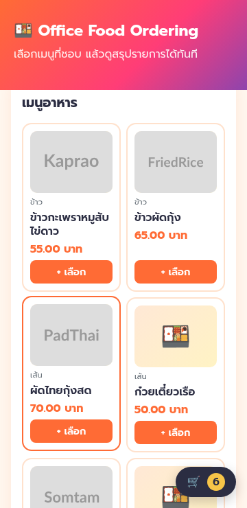
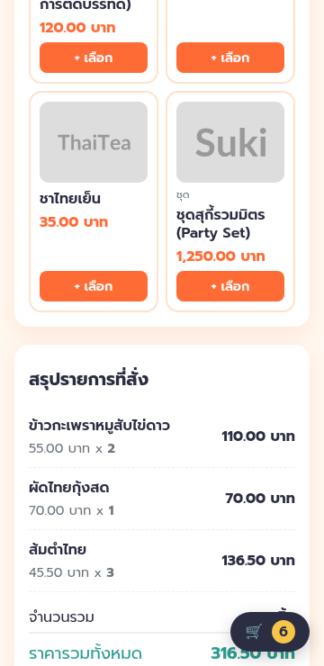

| อัปเดต v1.1 | 2026-11-18 14:19 (UTC+7): BUG-001 retest บน web v1.0.1 (commit 834e8e8) ผ่าน → Closed (Verified) รอบที่แก้: 1 | ตรวจเลื่อน 52 ตำแหน่งที่ 360px ไม่พบปุ่มทับจำนวนรวม/ยอดรวม ปุ่มซ่อน (visibility hidden, aria-hidden, tabindex -1) เมื่อเห็นสรุป และกลับมาเมื่ออยู่บนสุด Regression TC-01–TC-20 ผ่านทั้งหมด (ดู Run 2)  |
|---|
| Story | US-101 (req v1.1) |
|---|---|
| Web | https://vibecode-office-food.vercel.app | footer "Office Food Ordering v1.0.0 (US-101)" | commit e275187 | dpl_3ihxqcdNn3mVGBwM62QSk9MSnQgN |
| Data | data v1.0 (Design/data/menu_items.csv) import เข้า Supabase yhcjsgbffgabsmsybnle public.menu_items: 12 แถว, available 10, ผลรวมราคา available 1,781.25 |
| Test Cases | tc v1.1 |
| เครื่องมือ | Google Chrome headless (Playwright) 1280x800 และ 360x740 + Supabase SQL |
| วันที่ | 2026-11-18 14:11 (UTC+7) |
| ผู้ทดสอบ | 203 Independent Tester |
| Bug ID | BUG-001 |
|---|---|
| สถานะ | Open (รอบที่แก้: 0) → ดูสถานะล่าสุดด้านบน |
| ความรุนแรง | Low (UI/การใช้งานบนมือถือ ไม่กระทบการคำนวณ) |
| Story / AC / TC | US-101 / AC7 / TC-16 |
| เวอร์ชัน | web v1.0.0, commit e275187 | data v1.0 |
| สภาพแวดล้อม | Chrome headless, viewport 360x740 |
| ขั้นตอนทำซ้ำ | 1. เปิด URL ที่จอกว้าง 360px 2. กด id1 x2, id3 x1, id5 x3 3. เลื่อนหน้าจนบรรทัด "ราคารวมทั้งหมด" อยู่ขอบล่างจอ |
| ผลที่คาดหวัง | เห็นจำนวนรวมและราคารวมทั้งหมดครบ ไม่มีอะไรบัง (AC5, AC7) |
| ผลจริง | ปุ่ม 🛒 แบบ position:fixed (right 16px, bottom 16px) ทับคำว่า "ชิ้น" ของจำนวนรวม และบังตัวเลข "316.50 บาท" บางส่วน จะเห็นครบเมื่อเลื่อนสุดหน้า (202 แจ้งไว้แล้วในข้อจำกัด) |
| หลักฐาน |  |
| สาเหตุที่น่าจะเป็น | ปุ่มลอย .cart-pill ซ้อนบนเนื้อหาบนจอ ≤820px โดยไม่มีระยะเว้นหรือการซ่อนเมื่อเห็นสรุปแล้ว |
| ผู้รับผิดชอบ | 202 แก้ไข / 201 ตัดสินลำดับความสำคัญ |
| ขั้นตอนถัดไป | 201 ตัดสินว่าจะแก้ใน US-101 หรือไม่ ถ้าแก้ 203 จะ retest TC-16 และ regression TC-06–TC-18 |